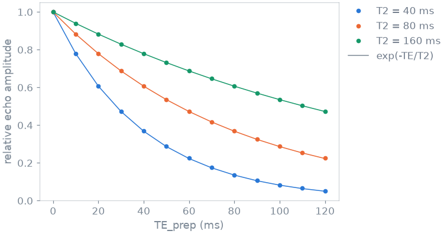
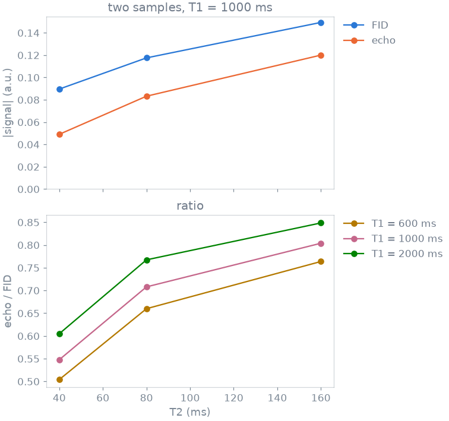

Note
Go to the end to download the full example code or to run this example in your browser via Binder.
5. Custom operator#
In lesson 3 you wrote a sequence from the operators that ship with blochsim.
In this lesson you write two operators of your own: a T2 preparation, and a
readout that records two samples in one repetition. An operator is a Python
function that returns events, and @ composes operators into one. No kernel
changes, and the new operators work in any simulator.
Learning objectives
Write a preparation by composing the shipped operators with
@.Play it from the layout of a simulator.
Write a readout that takes two samples per repetition.
Check an operator against a closed form or a shipped sequence.
Previous: 4. Description-based simulation.
Preparation#
A T2 preparation weights the magnetization by its transverse decay before the readout. It tips the magnetization into the transverse plane, lets it decay for the echo time TE_prep around a refocusing pulse, tips what is left back along z, and spoils whatever did not come back.
Each of those steps is an operator that ships with blochsim, so @ is all
you write. The refocusing pulse is requested without crushers
(crushed=False): this refocusing must form an echo, and the crusher pair
that Refocusing() adds by default would spoil it.
import torch
from blochsim import Delay, Excitation, Refocusing, Spoil
def t2_preparation(echo_time_s, *, spoil_s=2e-3):
"""A T2 preparation of duration ``echo_time_s``, then a spoiler."""
half = 0.5 * echo_time_s
return (
Excitation(0.5 * torch.pi)
@ Delay(half)
@ Refocusing(torch.pi, 0.5 * torch.pi, crushed=False)
@ Delay(half)
@ Excitation(-0.5 * torch.pi)
@ Delay(spoil_s)
@ Spoil()
)
Preparation in a sequence#
An operator goes into a layout like any other. The preparation leaves the
weighted magnetization along z, and the fast spin echo that follows excites
it as it would any other longitudinal magnetization. The handlers are the
defaults, so the layout only uses self.operators for the pulses and the
readout of the train:
from blochsim.model import Simulator
class T2PreparedFSE(Simulator):
states = 8
def layout(self, *, TE_prep, ESP, ETL):
half = Delay(0.5 * ESP * 1e-3)
parts = [
t2_preparation(TE_prep * 1e-3),
self.operators.excitation(0.5 * torch.pi, 0.5 * torch.pi),
]
for _ in range(ETL):
parts += [
half,
self.operators.refocusing(torch.pi, 0.5 * torch.pi),
half,
self.operators.readout(0.5 * torch.pi),
]
return parts
Contrast weighting#
Sweep TE_prep and compare the first echo with exp(-TE_prep / T2), which is what a T2 preparation is for. Times are in milliseconds:
T2 = torch.tensor([40.0, 80.0, 160.0])
prep_times = torch.linspace(0.0, 120.0, 13)
prepared = torch.stack(
[
T2PreparedFSE(TE_prep=float(te), ESP=5.0, ETL=1)
.simulate(T1=1000.0, T2=T2)[..., 0]
.abs()
for te in prep_times
],
dim=-1,
)
weighting = prepared / prepared[:, :1]
expected = torch.exp(-prep_times / T2[:, None])
print(f"largest difference from exp(-TE/T2): {(weighting - expected).abs().max():.1e}")

largest difference from exp(-TE/T2): 1.9e-03
The two agree to about 0.2%. The remainder is physics, not error: the magnetization tipped back up recovers a little during the spoiler that follows, and more of it does so after the longer preparations, which leave less behind.
Readout#
The shipped readouts differ in what they play around the sample. In an unbalanced steady-state train each repetition winds every configuration order on by one. A sample taken before that winding is a free induction decay (FID) after the pulse just played. A sample taken after it sits where the next pulse will refocus the previous excitation: an echo, and far more strongly T2-weighted.
blochsim ships these as SSFPFidReadout() and
SSFPEchoReadout(). Recording both in one repetition is a
double-echo steady state (DESS), and you write it by putting the winding
between two samples:
Use it as the readout handler of a steady-state sequence. The sequence is one excitation and one readout per repetition, with the repetition time as the readout’s wait:
FLIP, TR, REPETITIONS = 30.0, 20.0, 64
class DESS(Simulator):
excitation = Excitation
readout = dess_readout
states = 24
def layout(self, *, flip, TR):
return [
self.operators.excitation(torch.deg2rad(torch.as_tensor(flip))),
self.operators.readout(duration_s=TR * 1e-3),
]
Check it against the shipped readouts. The first sample has to be what an FID train records and the second what an echo train records, since those are the same two samples taken one at a time. Changing the readout handler is all that separates the three simulators:
from blochsim import SSFPEchoReadout, SSFPFidReadout
class SSFPFid(DESS):
readout = SSFPFidReadout
class SSFPEcho(DESS):
readout = SSFPEchoReadout
def played(sequence, T1=1000.0):
train = sequence(flip=FLIP, TR=TR, repetitions=REPETITIONS)
return train.simulate(T1=T1, T2=T2)
both = played(DESS)
fid, echo = both[..., 0::2], both[..., 1::2]
print(
f"first sample against SSFPFidReadout: {(fid - played(SSFPFid)).abs().max():.1e}"
)
print(
f"second sample against SSFPEchoReadout: {(echo - played(SSFPEcho)).abs().max():.1e}"
)
first sample against SSFPFidReadout: 0.0e+00
second sample against SSFPEchoReadout: 0.0e+00
Both samples agree exactly with the corresponding single-sample sequences.
The ratio of the two is a T2 contrast. The echo has spent one more repetition in the transverse plane, so it carries T2 where the FID carries a mixture of T1 and T2. Compute it at three T1 values:

at T2 = 40 ms the ratio moves 0.10 over a 3.3x range in T1
The ratio rises with T2 at every T1 and moves much less with T1 than with T2. That makes it usable as a T2 contrast. It also means that a DESS T2 measurement at a larger flip angle needs T1 to be known.
Limits#
A preparation, a readout, or a shaped or per-channel pulse is built from the shipped operators and reaches the kernels unchanged.
An event cannot say how much a gradient dephases. A sequence carries one crusher moment, and dephasing comes in whole configuration orders. A bipolar pair, a velocity-encoding moment of its own, or a crusher of twice the area of its neighbour cannot be written as operators. They need a gradient moment per event through the packed layout and every kernel, which is a change to blochsim itself.
Specification#
What this lesson built, stated the way you would ask an agent for it:
Write two blochsim operators by composition with @. A T2 preparation:
90 degree pulse, wait TE/2, uncrushed 180 degree refocusing, wait TE/2,
-90 degree pulse, short wait, spoiler. Check the first echo of a spin echo
train that follows it against exp(-TE/T2). A DESS readout: sample, dephase,
sample, wait. Use it as the readout handler of a steady-state Simulator
(30 degrees, TR 20 ms) and check its two samples against the shipped
SSFPFidReadout and SSFPEchoReadout.
Total running time of the script: (0 minutes 0.342 seconds)